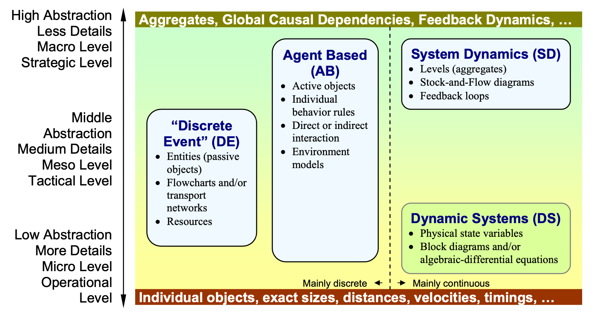
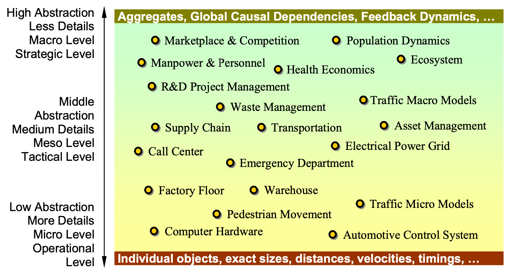

模拟仿真
Andrei Borshchev and Alexei Filippov: From System Dynamics and Discrete Event to Practical Agent Based Modeling: Reasons, Techniques, Tools. The 22nd International Conference of the System Dynamics Society, July 25 - 29, 2004, Oxford, England
由于模拟仿真的概念过于庞大，经常有概念混淆和不理解的困扰。
最近读到一篇论文，对模拟仿真这个巨大的主题做了分类，感觉挺有帮助的。论文是在anylogic的网站上找到的：From System Dynamics and Discrete Event to Practical Agent Based Modeling: Reasons, Techniques, Tools
仿真建模主要范式
根据图A，仿真建模的范式和特点有：
系统动态学 (SD)
- 旨在模拟抽象度高的、连续的系统
- 直观的理解，可以显式地表达为Stock-and-Flow的图表
- 重要的一环是Stock-and-Flow中的反馈环路，使得系统具有动态性
离散事件 (DE)
- 模拟对象就是离散事件，抽象度居中
- 具有离散事件的实体、实体所在的环境、流程图/网络、资源等
- 一般都有时钟
- p.s. 某些场景下也可以使用有限状态机FSM来实现相同的功能
基于智能体 (AB)
- 根据任务目标可以设置不同抽象度
- 每个智能体agent是独立的，也是互相关联的
- 行为规则/学习目标
动态系统 (DS)
- 抽象层级低，针对的问题基本都是连续的
- 系统的物理状态
- 用微分方程描述的系统

Fig. A 仿真建模中的主要范式
模拟仿真应用例子
应用的例子如图B，所有的应用都可以理解为仿真，但是其仿真建模之间的区别很大。
例如图形学中的CFD、工程中的FEM，它们模拟的对象是连续介质的微观层面，有位置、时间、场的引入，是关于物理量本身的模拟仿真。而工厂和生产线的OEE、流程和成本的建模，涉及离散事件/流程的属性，以及通过流程关系和环境交互，最终仿真出离散系统的效果呈现，属于中等直观层面的模拟仿真。供应链的模拟也一样。市场竞争和人口动态学接触较少。

Fig. B 模拟仿真的一些应用举例